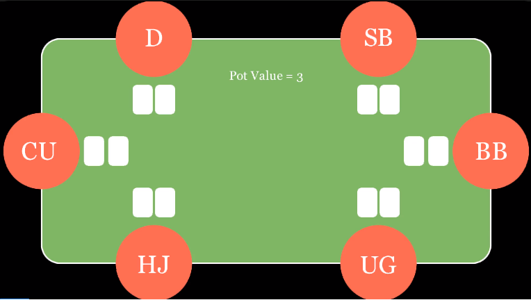
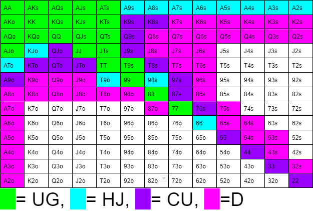

Positioning
The position you are in comparrion to the dealer is very important in how you play.

In the picture above everyone has been dealt their cards and the play starts with UG.
Here, UG has to go first and has the least information to play with. He doesn't know what his opponents might do or even a relative idea of their hand strength. If you are HJ, you get to have a relative idea of UG's hand. For example, if UG bets the table min, you can assume that their cards might not be the best since they aren't taking any risks. This is why your position is very important when you are playing. Imagine you are a dealer and everyone else has folded, even if your cards aren't the best, you only have to beat two more players, the SB and BB. This allows you to play hands that on the UG might seem like bad hands, but as D, relatively good ones.
Opening Ranges
Here are the cards that would be considered good at their positions.

The cards from UG to D slowly fill up the table, with every color being the next position. As you can see, the UG should only be playing with a few pairs, while D can play with more than half the possible combinations.(s = suited & o = off suite)
This chart isn't set in stone. The way you play has to also adapt to the way your opponents play. If they are aggressive, you might have to play fewer hands, but if they are reckless, you can loosen up a little bit.